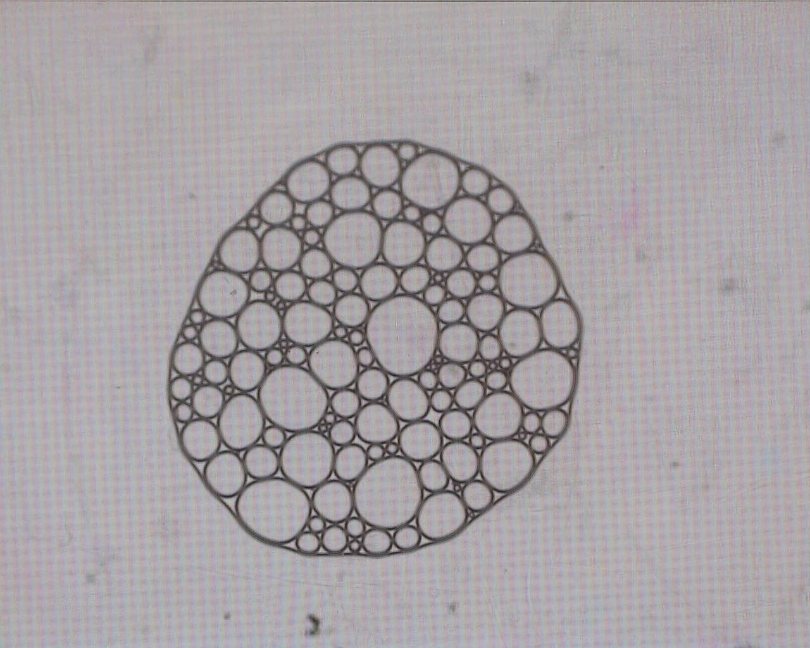
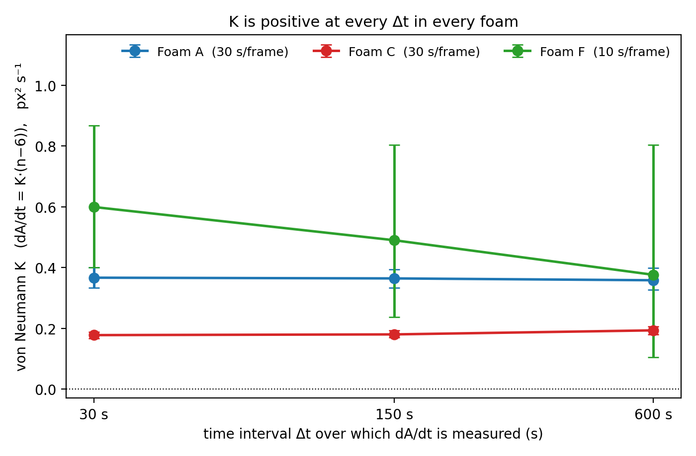
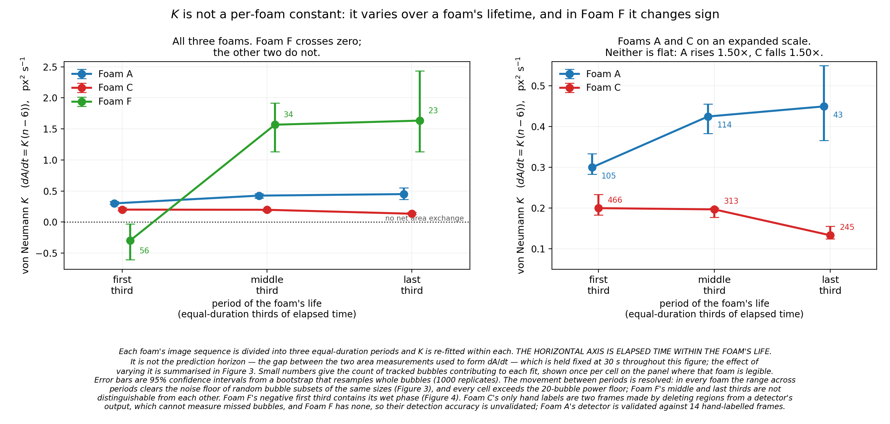
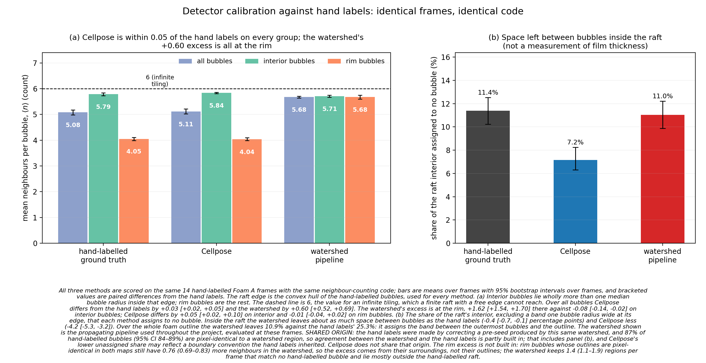
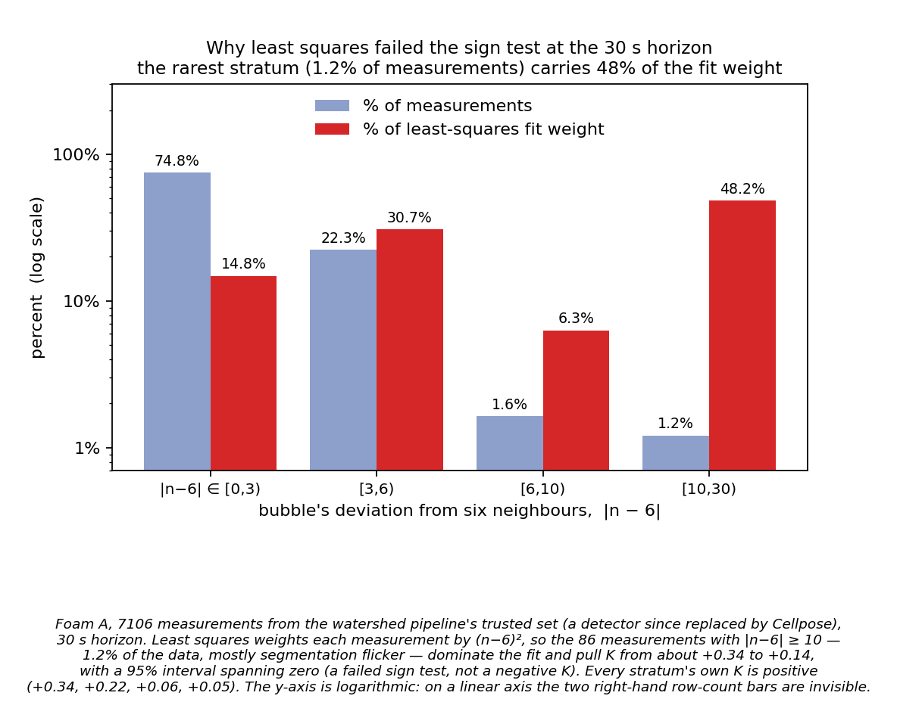

Finding order
inside foam.
I tracked individual bubbles in three evaporating soap foams to test a 1952 law of foam coarsening, and checked my own measurements against hand-labelled frames along the way.
Drag to rotate. Illustration of a foam seen from above; heights and colours are not measured.
Bubbles in all three foams followed von Neumann’s law in sign: the coefficient K was positive, with its 95% interval above zero, in all nine foam × time-interval tests. For Foam A, K = 0.367 px²/s [0.333, 0.400] at Δt = 30 s.
But K is not a fixed constant of each foam. It rose 1.5× over Foam A’s life, fell 1.5× over Foam C’s, and was negative during Foam F’s wet early phase. A graph neural network did not predict bubble growth better than the law, which was the best model in 8 of 9 held-out tests. Detection accuracy has been measured only on Foam A, where it matched hand labels closely (F1 0.966).
Does a bubble’s neighbour count set how fast it grows?
Squeezed between two glass plates, a soap foam becomes one flat layer of bubbles. Gas seeps from small bubbles into large ones, so small bubbles shrink and vanish while large ones grow.
Von Neumann’s law predicts each bubble’s rate of area change A from its number of neighbours n alone. I measured A and n for every bubble in time-lapse images of three foams (A, C and F) recorded in Dr. Oh’s lab, and tested whether the law holds when the foam is drying at its open edge.
For K > 0, a bubble with fewer than six neighbours shrinks and one with more than six grows. The law is derived for an ideal dry foam; wet foams and a free outer edge can bend it [1–3].

Try the law
Illustration in arbitrary units (A₀ = 100, K = 1, n held fixed).
From pixels to a tested law
Detect. Outline every bubble with Cellpose-SAM, keeping only regions inside the foam.
Track. Follow each bubble from frame to frame, and drop tracks whose area flickers because of detection errors.
Build the graph. Each bubble is a node and each shared film is a link, which gives every bubble its neighbour count.
Fit and compare. Estimate K with the median of per-bubble ratios, which a few extreme points cannot drag. 95% intervals resample whole bubbles, and models are tested on a foam they never saw in training.
K is positive in all nine tests

0.367 → 0.358
Foam A’s K barely depends on the time interval
From Δt = 30 s to 600 s, Foam A’s K changes by a factor of 1.02. All nine intervals in Fig. 2 lie above zero.
Units. No scale bar was recorded, so K is in px²/s. Foam A’s background graph paper measures 18.27 px per square. If the squares are 1 mm, Foam A’s K is about 1.1 × 10³ µm²/s [1.0, 1.2] × 10³; if they are 2 mm, about 4.4 × 10³ µm²/s. The grid size has not been confirmed. Foams C and F have no ruler, so I do not compare the three foams’ K values in size.
| Foam | Δt = 30 s | Δt = 150 s | Δt = 600 s |
|---|---|---|---|
| A | 0.367 [0.333, 0.400] (156) | 0.364 [0.333, 0.393] (156) | 0.358 [0.327, 0.398] (137) |
| C | 0.178 [0.167, 0.189] (466) | 0.180 [0.170, 0.193] (450) | 0.193 [0.180, 0.206] (356) |
| F | 0.600 [0.400, 0.867] (56) | 0.490 [0.237, 0.804] (49) | 0.376 [0.105, 0.803] (34) |

K changes over each foam’s life
Split into equal thirds of elapsed time, Foam A’s K rose from 0.300 to 0.450 px²/s and Foam C’s fell from 0.200 to 0.133. Foam F’s was −0.300 in its first third and about +1.6 afterwards.
Foam F was wettest during its first ten minutes. While liquid drained, many bubbles with fewer than six neighbours still grew, which makes a fitted K negative. So Foam F’s single values in Table 1 average two different regimes.

The detector matches hand labels on Foam A
Against 14 hand-labelled Foam A frames, the detector found 1,007 of the 1,066 labelled bubbles with 11 false detections: precision 0.989, recall 0.945, F1 0.966. Its mean neighbour count was within 0.03 of the hand labels (5.11 against 5.08).
K fitted on hand-labelled bubbles (+0.366) and on detected bubbles (+0.333) did not differ significantly (p = 0.51).
The hand labels also show that ⟨n⟩ = 6 is the wrong target for a finite raft: bubbles on the free edge have about four neighbours, so the population mean is 5.08.

A few extreme points can drag a least-squares fit
Least squares weights each measurement by (n − 6)². In an earlier version of the pipeline, 86 of 7,106 measurements (1.2%), mostly large flickering detections, carried 48% of the fit weight and pulled Foam A’s K from about +0.34 to +0.14, with an interval crossing zero.
On Foam F the same estimator once gave K = −1.74; a median-based estimator on the same data gave about +0.05. That is why every K here uses the median-based estimator.
The neural network did not beat the law
I trained graph neural networks to predict each bubble’s area change and tested them on a foam left out of training, for every foam and time interval (nine tests). The network never beat the best simple baseline and was significantly worse in seven tests. Von Neumann’s law was the best model in eight of nine.
My reading is that, for this target, the neighbour count n already carries the useful information in the graph.
Neighbour swaps, checked one by one
A neighbour swap (T1) is when two touching bubbles separate while two others make contact. The pipeline detected 22 swaps in Foam A, and each was checked by eye against four consecutive frames: 22 of 22 were real (false-positive rate 0/22, 95% interval 0–14.9%). How many real swaps the detector misses was not measured.

What these results do not show
- Accuracy is measured only on Foam A. Foam C’s only labels were made by deleting regions from an older detector’s output, and Foam F has none. My claim for Foams C and F is limited to a consistent positive K, not validated detection.
- No spatial calibration. K is in px²/s. Foam A converts to µm²/s only once its grid size is confirmed, and Foams C and F cannot be converted.
- K depends on choices. Raising the minimum bubble size raises K without levelling off (by 14% in Foam A, 50% in C and 57% in F), and leaving out bubbles on the raft’s edge changes it by 18% (A) and 13% (C).
- Identity errors in Foams C and F. Their bubble counts fall smoothly, yet the tracker created 632 (C) and 271 (F) spurious new bubble identities. Analyses that need long, unbroken tracks are reliable only on Foam A.
- Small sample. Three independent foams. Foam F has only 56 tracked bubbles and wide intervals.
- No direct wetness measurement. Image brightness cannot give film thickness or liquid content. Distance to the raft edge is unreliable because the automatic foam outline extends past the outermost bubbles.
Contributions and data
| Part of the work | Who |
|---|---|
| Preparing the foams and recording the time-lapses (Foams A, C, F) | Dr. Oh’s lab |
| Code for detection, tracking, graph building, fitting and the neural networks | Me, with an AI coding assistant (Claude) for help and code review |
| Analysis, statistics and deciding which results to keep or retract | Me, with AI help and review |
| Guidance and feedback | Dr. Oh |
| Text of this summary and the website | Me, drafted with AI assistance |
The work ran from June to October 2026.
- A. E. Roth, C. D. Jones, D. J. Durian (2013). Bubble statistics and coarsening dynamics for quasi-two-dimensional foams with increasing liquid content. Physical Review E 87, 042304.
- C. D. Schimming, D. J. Durian (2017). Border-crossing model for the diffusive coarsening of two-dimensional and quasi-two-dimensional wet foams. Physical Review E 96, 032805.
- A. T. Chieco, D. J. Durian (2021). Experimentally testing a generalized coarsening model for individual bubbles in quasi-two-dimensional wet foams. Physical Review E 103, 012610.
- I. H. Cho, S. Yeom, T. Sarkar, T.-S. Oh (2022). Unraveling hidden rules behind the wet-to-dry transition of bubble array by glass-box physics rule learner. Scientific Reports 12, 3191.
- C. Stringer, T. Wang, M. Michaelos, M. Pachitariu (2021). Cellpose: a generalist algorithm for cellular segmentation. Nature Methods 18, 100–106.
- A. Sanchez-Gonzalez et al. (2020). Learning to Simulate Complex Physics with Graph Networks. ICML, PMLR 119.
Figs. 1–6 come from my analysis of the lab’s recordings. The 3D model and the slider are illustrations.